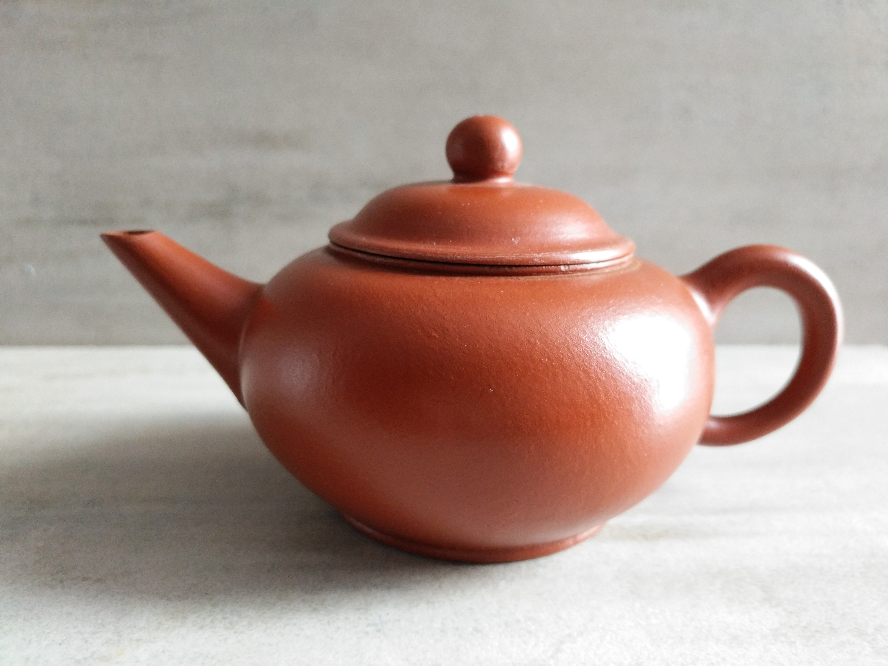

Yixing / Zisha clay teapots
Yixing teawares (also known as Zisha / Purple Clay) are prized because their unglazed surfaces absorb traces of the beverage, creating a more complex flavour. For these reasons, yixing teawares should never be washed using detergents, but rather with water only, and connoisseurs recommend using each tea vessel for one kind of tea or sometimes even one variety of tea only. - Wikipedia
Moon
One of my favourites here. The soft lines and curves of this pot adds to it's unique charm. It's unusual shape and characteristic makes it one-of-a-kind.
BUY
PHP12000
Plum
Understated and elegant, this teapot is accentuated by details of wood and plum flowers. The artist made great care in preserving the unique properties of the purple clay used, making it beautiful to see and to touch.
BUY
PHP14500
Poem
This geometric teapot features a beautiful hand-painted scenery on one side, and calligraphy of a short poem on the other—truly a work of art in itself.
BUY
PHP14500
Qiu
The classic design of this "duo qiu" teapot withstands the test of time and is continually used and prefered by a lot of tea drinkers in the world. The round and smooth body of the pot makes it a pleasure to hold and to use.
BUY
PHP4000
Jungle
This unique teapot depicts a scene from the jungle. The body of the pot has almost wood-like features and that the handles itself is made to resemble a tree branch. The pot also features a rotatable monkey on the cover, and some intricate detailing of leaves and mushroom.
BUY
PHP9000

Level
This pot has been used to brew ripe Puer for about 8 years now. You can see that the pot has already formed a nice shiny patina from extensive use.
BUY
PHP15000
Teapots
Ceramic teapots collected from around-the-world by myself and by others.
Oval
This locally-made pot takes inspiration from Japanese-style teapots. The teapot and cups embody the Japanese philiosophy of wabi-sabi. Comes with four matching cups.
BUY
PHP2500
Jerusalem
Handmade and hand-painted by a local craftsman in Jerusalem, this teapot features a look and feel of the Middle East. Comes with two small matching cups.
BUY
PHP4500
Blue Chrysanthemum
A small, round, blue and gold porcelain tea set. Comes with four cups.
BUY
PHP4500